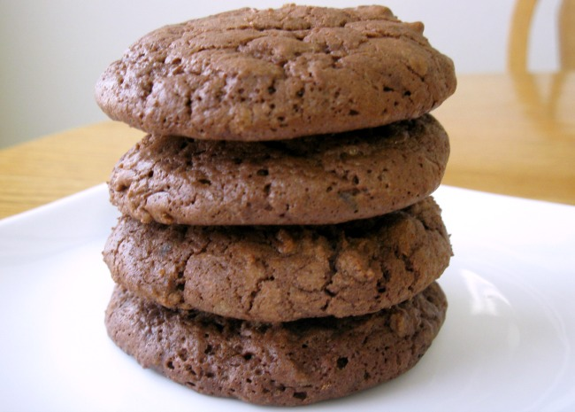

Chocolate Cookies

The BEST chocolate cookies recipe ever made.
Easy to cook and super tasty, it can be made in under an hour.
If you love thick and chunky cookies that are soft and pillowy and packed
with loads of chocolate , you're going to fall madly in love with these Chocolate Cookies!
Ingredients
- 1 cup butter,softened
- 1 and 1/2 cups white sugar
- 2 eggs
- 2 teaspoons vanilla extract
- 2 cups all/purpose flour
- 2/3 cup cocoa powder
- 3/4 teaspoon baking soda
- 1/4 teaspoon salt
- 2 cups semisweet chocolate chips
- 1/2 cup chopped walnuts (optional)
Preparation
- Preheat oven to 350 degrees F (175 degrees C).
- In large bowl, beat butter, sugar, eggs, and vanilla until light and fluffy. Combine the flour, cocoa, baking soda, and salt; stir into the butter mixture until well blended. Mix in the chocolate chips and walnuts. Drop by rounded teaspoonfuls onto ungreased cookie sheets.
- Bake for 8 to 10 minutes in the preheated oven, or just until set. Cool slightly on the cookie sheets before transferring to wire racks to cool completely.